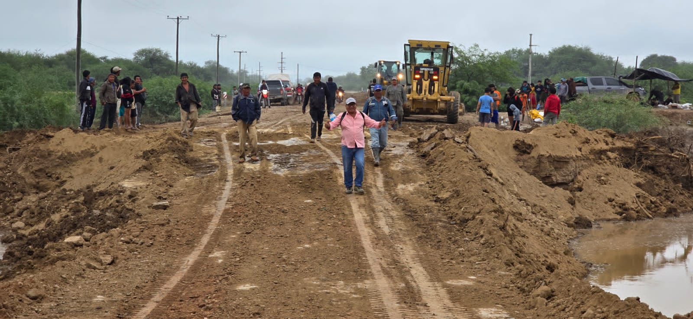
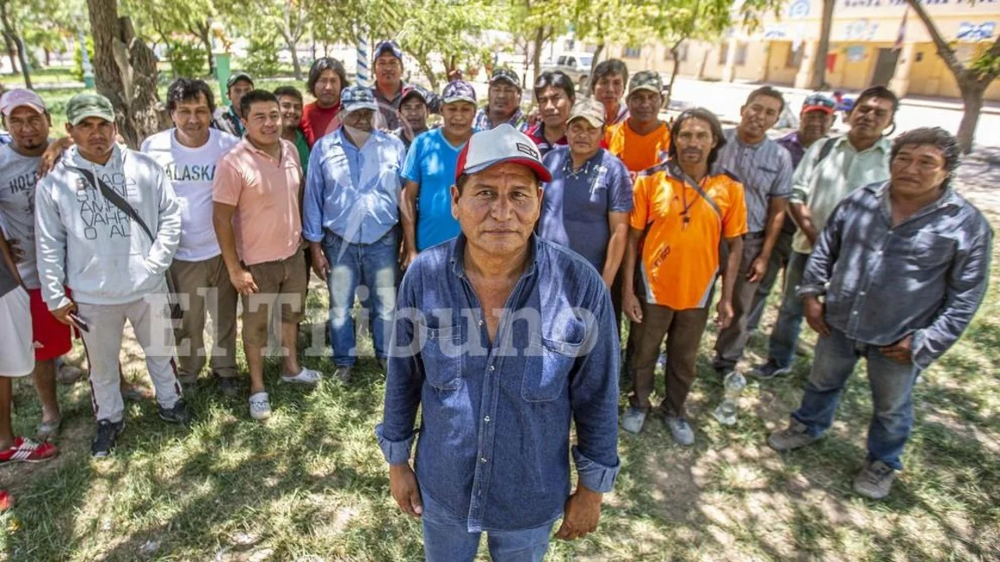
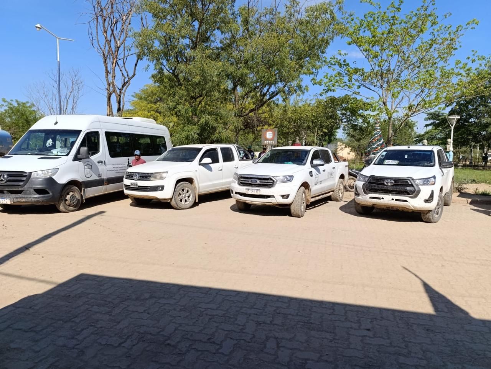
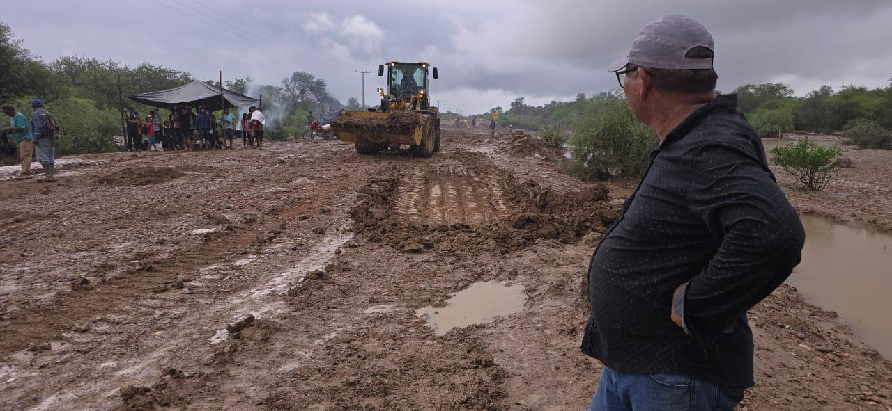
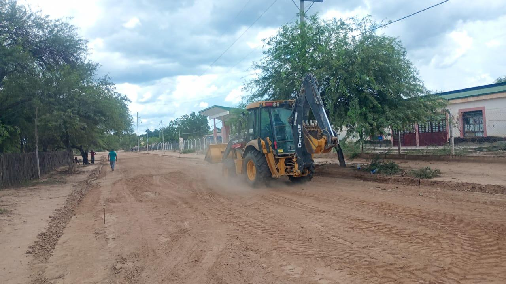
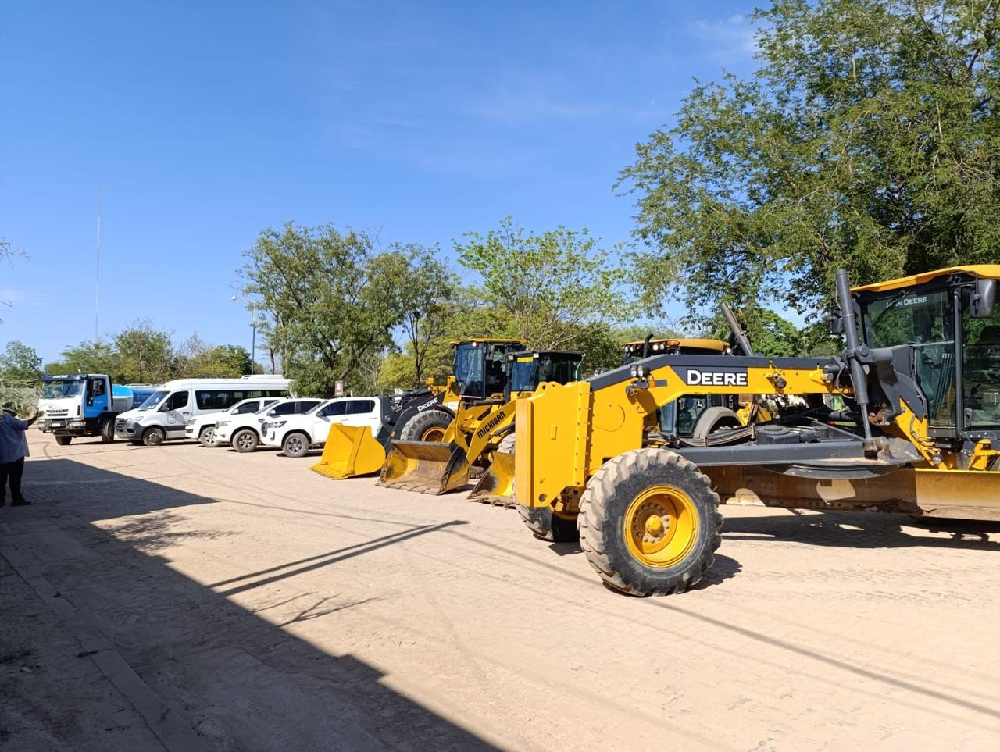
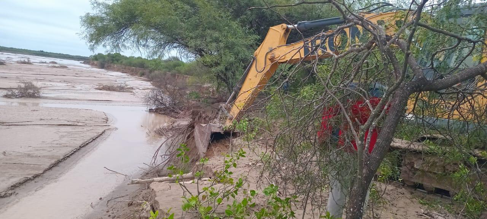
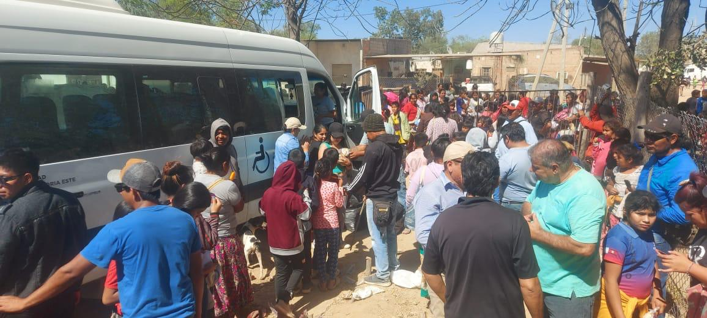
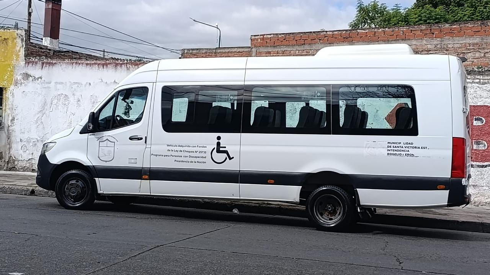

Un triunfo histórico que abrió una nueva etapa de representación para Santa Victoria Este.
Municipalidad de Santa Victoria Este
Gestión presente en cada comunidad del Chaco salteño
Rogelio Nerón, primer intendente wichí de Santa Victoria Este, encabeza una gestión de territorio, identidad e inclusión para comunidades originarias y familias criollas.


La gestión
Una página para mostrar lo que se hace en territorio
La gestión municipal acompaña a vecinos y comunidades con obras, caminos, salud, deporte, cultura, asistencia territorial y presencia en los parajes.
El trabajo del intendente Rogelio Nerón se expresa en una forma de gobernar cercana, con recorridas, escucha comunitaria y acciones concretas en el territorio.
Liderazgo histórico
Rogelio Nerón, una voz del territorio en la gestión pública
Su llegada a la intendencia marcó un hecho histórico para Salta: un dirigente nacido y criado en una comunidad wichí al frente del municipio de Santa Victoria Este.
Su mirada propone gobernar escuchando a las comunidades, acompañando a los vecinos y articulando soluciones para originarios y criollos con presencia real en los parajes.
Gestión con identidad
“Mi gobierno será para todos”
Una visión de unidad para comunidades originarias, familias criollas, instituciones y vecinos de todo el municipio.
Participación institucional provincial llevando la voz del territorio.
Continuidad de una gestión con respaldo popular y presencia comunitaria.
Una forma de gobernar escuchando la experiencia y la palabra de las comunidades.
Obras y acciones
Gestión que se ve
Obras para mejorar la vida diaria
Avances de infraestructura, caminos, servicios y tareas municipales con equipos trabajando en territorio.

Acompañamiento comunitario
Cercanía con barrios, parajes, comunidades originarias y familias criollas.

Presencia municipal
Vehículos, maquinaria y equipos para llegar a más sectores del municipio.
Galería de gestión
Imágenes para contar el trabajo municipal






Territorio y cultura
Santa Victoria Este, identidad viva del norte salteño
A la vera del Río Pilcomayo, el municipio reúne familias criollas y comunidades Wichí, Chorote, Qom, Chulupí y Quechua. La página mantiene ese espíritu: cálido, territorial y cercano.
Contacto
Atención al vecino
Canales institucionales para consultas, trámites, reclamos y orientación municipal.
Sede municipal: San Martín s/n, Santa Victoria Este
Departamento: Rivadavia, Salta
Teléfono: 03875-490126
Correo: contacto@santavictoriaeste.gob.ar